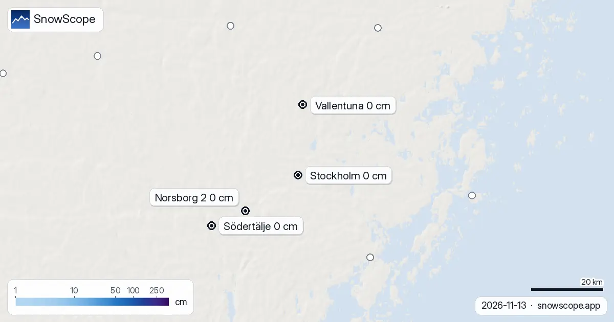
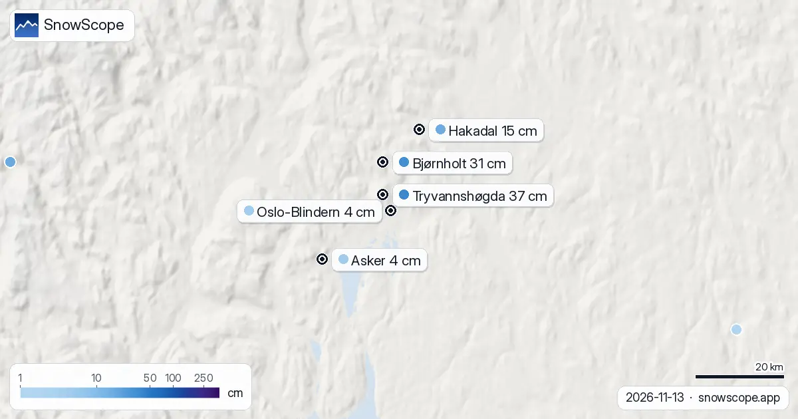
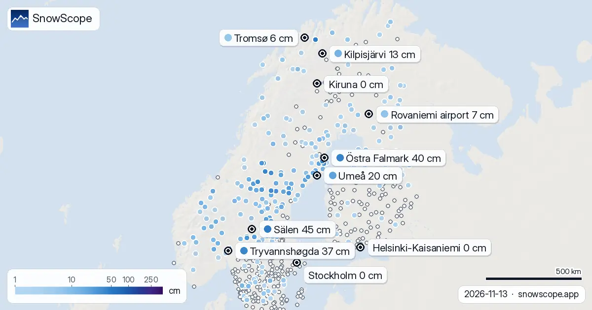

Snörapporter · Snödjup
Dagliga snörapporter för skidåkare: var snön ligger, vad som är på väg och var du kan åka, från SnowScopes snökarta och mätstationer. Varje siffra kommer från dagens data.

Snödjup i Stockholm den 13 november 2026: 0 cm på Observatoriekullen och vid alla stationer runt staden. När snön brukar komma och varför helgen inte ger någon.

Uppmätt snödjup i Oslo den 13 november 2026: 4 cm på Blindern, 31 cm vid Bjørnholt och 37 cm på Tryvannshøgda. Hur en vanlig mitt i november ser ut och vad helgen gör med snön.

Uppmätt snö på marken den 13 november 2026 i Oslo, Bergen, Trondheim, Tromsø, Stockholm, Göteborg, Östersund, Umeå, Luleå, Kiruna, Helsingfors, Tammerfors, Uleåborg och Rovaniemi: från 20 cm i Umeå till barmark i Kiruna.